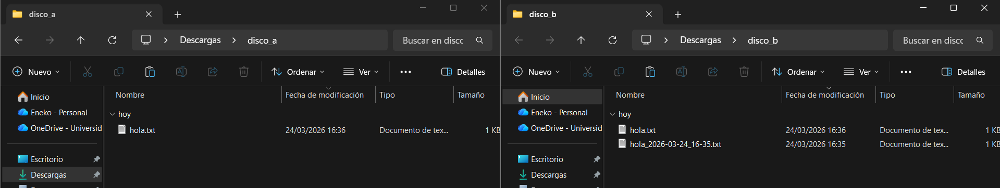
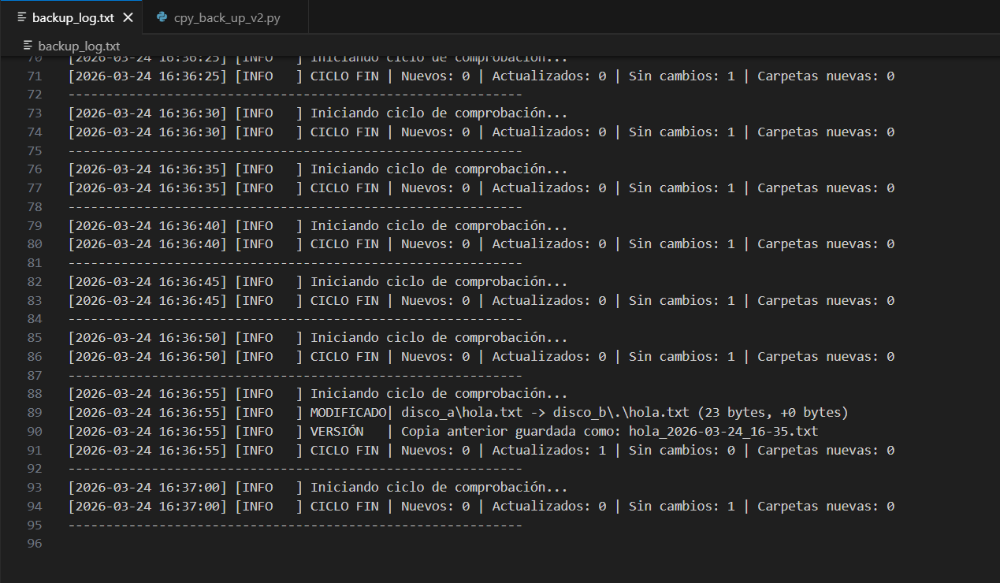

Práctica centrada en diseñar una estrategia de copias de seguridad para dos escenarios distintos y en modificar un script de sincronización para guardar versiones anteriores de los archivos cuando se detectan cambios, dejando además un registro más claro en los logs.
Dificultad
Media
Tecnologías
Backup · Python · Logs
Estado
Entregada
Resumen
CompletadaEnunciado
La práctica pide responder a tres bloques: diseñar una estrategia teórica de backup, modificar un script de Python para añadir versionado y mejorar los logs, y hacer una valoración final.
Parte 1
DiseñoDiseñar dos planes de copia de seguridad teniendo en cuenta la teoría vista en clase y justificando las decisiones tomadas.
Parte 2
PythonModificar el archivo de Python para que, cuando se cambie un fichero, se conserve la versión anterior con fecha y hora en el nombre.
asier.txt pasa a guardar una copia anterior con fecha.docxParte 3
ReflexiónValorar la dificultad de la práctica para ayudar a ajustar prácticas futuras.
Entrega
Se responde a cada punto pedido en la práctica, separando el diseño teórico del desarrollo en Python.
Apartado 1.a.i
Empresa · 30 trabajadoresPara una empresa de desarrollo web y hosting de 30 trabajadores se propone una estrategia basada en la regla 3-2-1: tres copias de los datos, en dos soportes distintos y con una copia fuera de la oficina.
Precio medio aproximado: NAS de 800€ a 1200€ más discos por unos 600€; almacenamiento cloud de unos 46€/mes en AWS o 10€/mes en Backblaze para 2 TB; software desde gratuito hasta unos 400€/año. El coste total estimado queda alrededor de 140€–180€ al mes según el proveedor elegido.
Apartado 1.a.ii
Alternativa barataLa alternativa más económica para la empresa consiste en usar NAS + Duplicati + Backblaze B2. Esta opción reduce el coste del software y mantiene una copia local y otra externa, por lo que sigue siendo válida a nivel de seguridad.
Apartado 1.b.i
Autónomo · 1 trabajadorPara un autónomo se prioriza una solución sencilla, barata y fácil de mantener. El sistema elegido combina un disco externo SSD con una copia en la nube y software gratuito de automatización.
Precio medio aproximado: SSD externo entre 100€ y 150€ y servicio cloud entre 7€ y 10€ al mes. Amortizando el hardware, el coste total queda alrededor de 15€ al mes.
Apartado 1.b.ii
Alternativa barataLa opción más barata para un autónomo sería usar solo Google Drive + Duplicati. No es tan robusta como combinar nube y disco físico, pero para un entorno de bajo riesgo ofrece una protección suficiente si se gestiona bien.
Conclusión del apartado 1: para la empresa conviene priorizar redundancia y automatización; para el autónomo, simplicidad y bajo coste. En ambos casos la idea clave es no depender de una sola copia y combinar respaldo local con copia externa.
Apartado 2.a
VersionadoEl script se ha modificado para que, cuando detecta que un archivo ha cambiado, guarde antes la versión anterior con un nombre fechado y después actualice el archivo principal como ya hacía originalmente.
hola.txt.hola_2026-03-24_16-35.txt.hola.txt en la carpeta destino.
Formato de fecha elegido: YYYY-MM-DD_HH-MM.
Se ha elegido porque ordena bien los archivos por fecha, evita problemas con caracteres como : en nombres de fichero y permite localizar rápido la versión anterior.
Apartado 2.b
LogsTambién se han mejorado los logs para que no solo indiquen si el ciclo se ejecuta, sino que informen con más detalle sobre lo ocurrido en cada comprobación.
Esto mejora la trazabilidad del sistema, porque permite saber exactamente qué ha pasado en cada ciclo y verificar si el versionado se ha realizado correctamente.
Evidencias
Las siguientes imágenes muestran tanto el resultado del versionado como la salida detallada del log.
Captura 1
Carpetas
En la carpeta de destino disco_b aparecen el fichero actual hola.txt y la copia anterior
hola_2026-03-24_16-35.txt, lo que demuestra que el versionado funciona cuando se modifica el archivo original en disco_a.
Captura 2
Log
El log muestra el mensaje MODIFICADO, el guardado de la VERSIÓN anterior y el resumen del ciclo con el contador de actualizaciones,
por lo que se verifica también la mejora pedida en el apartado de trazabilidad.
Criterios
Comprobación rápida de que se han cubierto todos los puntos pedidos en la práctica.
Conceptos y tecnologías
Idea principal: un sistema de backup útil no consiste solo en copiar archivos, sino en poder recuperar, mantener versiones y entender qué ha ocurrido gracias a un registro claro.
Reflexión
La práctica es útil porque mezcla una parte teórica muy cercana a entornos reales con una parte práctica de automatización. Diseñar copias de seguridad obliga a pensar en coste, redundancia y recuperación, mientras que modificar el script ayuda a entender que un backup sin versionado puede no ser suficiente cuando un archivo se sobrescribe por error.
La dificultad ha sido media. La parte de plantear soluciones de backup es asequible, pero requiere justificar bien las decisiones y comparar costes. La parte del script en Python exige más atención, sobre todo para gestionar correctamente el renombrado de versiones y dejar logs realmente informativos.